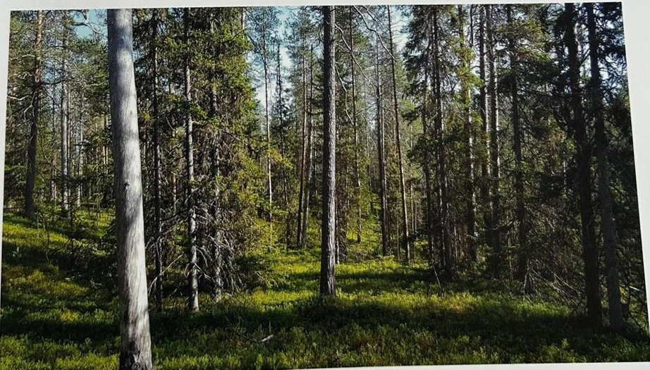

Groepen › Oude Wereld
25. Noordwest-Rusland, Schiereiland Kola

Het Europese boreale bos komt voor in Noord-Scandinavië (Lapland) en op het Russische schiereiland Kola in de buurt van Moermansk. Het bostype zet zich verder in Siberië. In het binnenland van Kola, rijk aan rotsformaties, meren, moerassige vlakten en snelstromende rivieren, zwerven nog Sami-herders met hun rendierkudden. Het noorden bestaat uit toendra, een lage vegetatie van mossen, grassen en dwergstruiken, in het zuiden heerst de taiga. Daartussen ligt een overgangszone met gedrongen struikbosjes van wilg, jeneverbes en lijsterbes. In de taiga liggen loofhoutbossen van berk en populier, en naaldhoutbossen gevormd door Grove den, Fijnspar en een beetje Europese lork. De arboretumgroep 25 heeft in de lange droge zomer van 2018 geleden onder schorskeveraantasting van de Fijnsparren en behoeft aanvulling. Hij ligt naast de Voervijver, waar een project loopt tot natuurherstel. Het werfaspect is tijdelijk en zal spoedig plaats maken voor een hernieuwd en verruimd uitzicht op de groep.
Uit het boek
0,70 ha · 6 soorten · 105 bomen · weerstation Moermansk
- Lapland op het schiereiland Kola, de tegenhanger van groep 11. Fijnspar wordt hier moeilijk oud door hartrot.

Bron: Geografisch Arboretum Tervuren. Een wereldreis rond bomen (2020), p. 204 en volgende.
Deelgroepen
- 25 – Kola schiereiland - Rusland, Finland
Soorten in deze groep (6)
- Picea abiesFijnspar · 92 bomen
- Alnus glutinosaZwarte els · 6 bomen
- Fagus sylvaticaGewone beuk · 2 bomen
- Quercus roburZomereik · 2 bomen
- Betula pendulaRuwe berk · 1 boom
- Pinus sylvestrisGrove den · 1 boom
Tekst en foto: arboretum-tervuren.be (Koninklijke Schenking), met toestemming gebruikt.